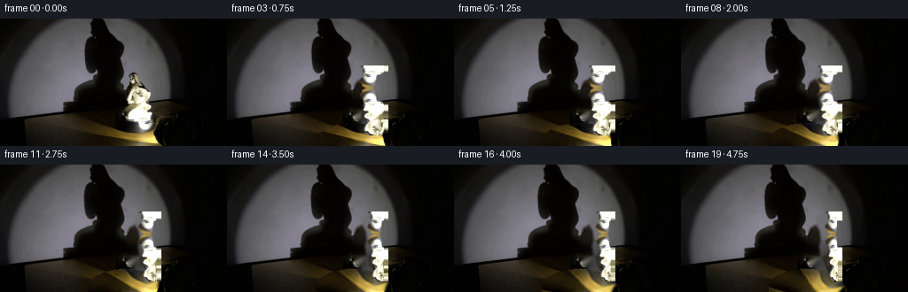
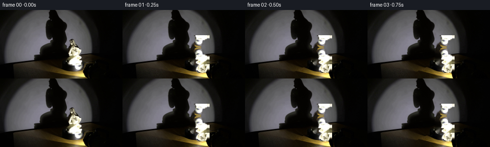
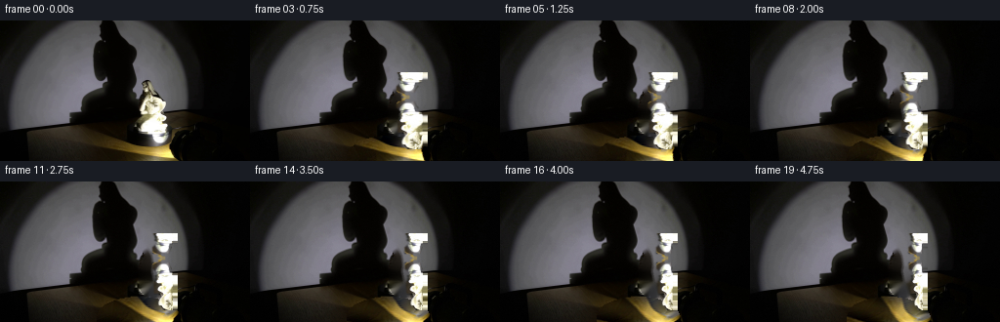
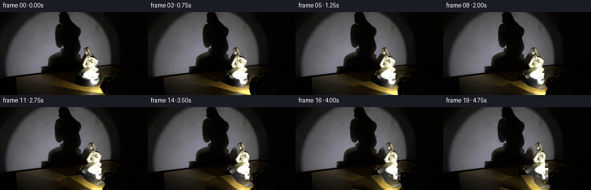
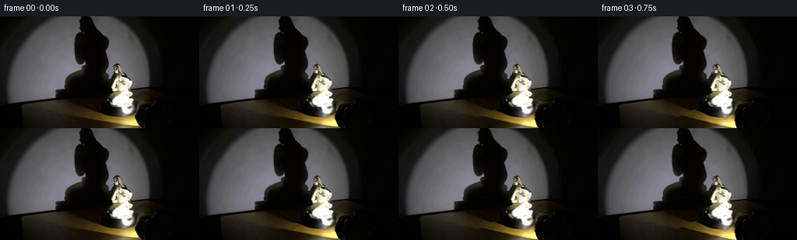

CODING AGENTS AS PIXEL WORLD MODELS
traex/DeepSeek-V4.1-Flash · 0082
点击播放 · 原生 RGB 像素
逐轮保存的候选
回放视频、检查图与代码变化。
每份候选均可单独播放。实际图片检查记录在下方工具轨迹中。
候选 01播放与检查图
点击播放 · 原生 RGB 像素

展开代码变化
--- 上一保存版本
+++ 本次保存版本
@@ -0,0 +1,266 @@
+#!/usr/bin/env python3
+"""Generate a five-second, locked-off turntable study from first_frame.png."""
+
+from pathlib import Path
+
+import cv2
+import numpy as np
+from PIL import Image
+from scipy.ndimage import binary_closing, binary_fill_holes
+
+import artifact_io
+
+
+ROOT = Path(__file__).resolve().parent
+WIDTH, HEIGHT = 256, 144
+FRAME_COUNT = 20
+FPS = 4
+
+
+def smoothstep(value):
+ value = np.clip(value, 0.0, 1.0)
+ return value * value * (3.0 - 2.0 * value)
+
+
+def statue_mask(image):
+ """Recover the porcelain silhouette without taking the neutral wall."""
+ height, width = image.shape[:2]
+ yy, xx = np.mgrid[:height, :width]
+ rgb = image.astype(np.float32)
+ red, green, blue = rgb[:, :, 0], rgb[:, :, 1], rgb[:, :, 2]
+ luma = red * 0.2126 + green * 0.7152 + blue * 0.0722
+
+ outline = np.array(
+ [
+ (150, 56), (156, 58), (159, 63), (159, 69), (162, 75),
+ (166, 80), (170, 86), (172, 92), (172, 99), (172, 106),
+ (171, 112), (170, 117), (173, 121), (172, 126),
+ (168, 129), (161, 129), (157, 126), (155, 121),
+ (151, 117), (148, 112), (144, 107), (142, 101),
+ (142, 95), (143, 89), (145, 84), (144, 79),
+ (144, 73), (145, 68), (146, 62),
+ ],
+ dtype=np.int32,
+ )
+ envelope = np.zeros((height, width), dtype=np.uint8)
+ cv2.fillPoly(envelope, [outline], 1)
+ envelope = cv2.dilate(envelope, np.ones((3, 3), np.uint8), iterations=1).astype(bool)
+
+ warm = red - blue
+ candidate = envelope & (
+ (luma > 106.0)
+ | ((warm > 5.0) & (luma > 42.0) & (yy < 126))
+ )
+ candidate &= ~((xx > 172) & (yy < 92))
+ candidate = binary_closing(candidate, iterations=1)
+
+ labels_count, labels, stats, _ = cv2.connectedComponentsWithStats(
+ candidate.astype(np.uint8), connectivity=8
+ )
+ keep = np.zeros(labels.shape, dtype=bool)
+ for label in range(1, labels_count):
+ area = int(stats[label, cv2.CC_STAT_AREA])
+ ys, xs = np.where(labels == label)
+ if area >= 18 and xs.mean() > 139 and xs.mean() < 174:
+ keep |= labels == label
+ keep = binary_fill_holes(keep)
+ keep = binary_closing(keep, iterations=1)
+
+ # Preserve a narrow, soft porcelain rim at the bottom and the tiny crown.
+ crown = (
+ envelope
+ & (yy >= 56)
+ & (yy <= 70)
+ & (xx >= 146)
+ & (xx <= 159)
+ & (luma > 70.0)
+ )
+ keep |= crown
+ keep &= envelope
+ keep = binary_fill_holes(keep)
+ return keep
+
+
+def background_plate(image, mask):
+ mask_u8 = cv2.dilate(mask.astype(np.uint8), np.ones((3, 3), np.uint8), iterations=1)
+ return cv2.inpaint(image, mask_u8, 4, cv2.INPAINT_TELEA)
+
+
+def ellipse_coordinates():
+ yy, xx = np.mgrid[:HEIGHT, :WIDTH]
+ center_x, center_y = 141.5, 140.0
+ radius_x, radius_y = 43.0, 22.5
+ u = (xx - center_x) / radius_x
+ v = (yy - center_y) / radius_y
+ radius = np.sqrt(u * u + v * v)
+ angle = np.arctan2(v, u)
+ inside = (radius <= 1.0) & (yy >= 118)
+ return u, v, radius, angle, inside
+
+
+def rotate_platform(plate, theta):
+ """Rotate surface detail clockwise while keeping the fixed light envelope."""
+ smooth = cv2.GaussianBlur(plate, (0, 0), 7.5)
+ detail = plate.astype(np.float32) - smooth.astype(np.float32)
+ detail *= 1.22
+
+ u, v, radius, angle, inside = ellipse_coordinates()
+ center_x, center_y = 141.5, 140.0
+ radius_x, radius_y = 43.0, 22.5
+ source_angle = angle - theta
+ source_x = center_x + radius_x * radius * np.cos(source_angle)
+ source_y = center_y + radius_y * radius * np.sin(source_angle)
+ map_x = source_x.astype(np.float32)
+ map_y = source_y.astype(np.float32)
+ warped_detail = cv2.remap(
+ detail,
+ map_x,
+ map_y,
+ interpolation=cv2.INTER_CUBIC,
+ borderMode=cv2.BORDER_REFLECT_101,
+ )
+
+ result = plate.astype(np.float32).copy()
+ inside_f = inside.astype(np.float32)[:, :, None]
+ rotated = smooth.astype(np.float32) + warped_detail
+ result = result * (1.0 - inside_f) + rotated * inside_f
+
+ # A restrained travelling reflection makes the otherwise glossy disk read
+ # as rotating. The first frame remains untouched because this fades from zero.
+ angle_offset = np.arctan2(np.sin(angle - (0.28 + 0.72 * theta)),
+ np.cos(angle - (0.28 + 0.72 * theta)))
+ glint = np.exp(-((angle_offset / 0.32) ** 2))
+ glint *= smoothstep((radius - 0.18) / 0.55) * (1.0 - smoothstep((radius - 0.88) / 0.16))
+ fade = 1.0 - np.cos(theta)
+ glow = (glint * fade * 16.0)[:, :, None] * np.array([1.0, 0.74, 0.22])
+ result += glow * inside_f
+ return result
+
+
+def deform_shadow(plate, theta):
+ """Move the wall shadow edges subtly with the changing projected profile."""
+ yy, xx = np.mgrid[:HEIGHT, :WIDTH]
+ x_window = smoothstep((xx - 82.0) / 8.0) * (1.0 - smoothstep((xx - 139.0) / 8.0))
+ y_window = 1.0 - smoothstep((yy - 129.0) / 7.0)
+ window = x_window * y_window
+
+ amount = 1.55 * np.sin(theta * 0.92)
+ edge = np.tanh((113.0 - xx) / 5.5)
+ dx = amount * edge * window
+ dx += 0.28 * np.sin(theta * 0.65) * window
+ dy = 0.55 * np.sin(theta * 1.18) * window
+ map_x = (xx + dx).astype(np.float32)
+ map_y = (yy + dy).astype(np.float32)
+ return cv2.remap(
+ plate,
+ map_x,
+ map_y,
+ interpolation=cv2.INTER_CUBIC,
+ borderMode=cv2.BORDER_REFLECT_101,
+ )
+
+
+def warp_statue(image, mask, theta):
+ """Cylindrical yaw mapping: surface detail travels left for clockwise turn."""
+ x0, y0, x1, y1 = 134, 53, 182, 132
+ crop = image[y0:y1, x0:x1].astype(np.float32)
+ alpha = cv2.GaussianBlur(mask[y0:y1, x0:x1].astype(np.float32), (0, 0), 0.55)
+ alpha = np.clip(alpha, 0.0, 1.0)
+ premultiplied = crop * alpha[:, :, None]
+
+ yy, xx = np.mgrid[y0:y1, x0:x1]
+ center_x = 158.0
+ radius_x = 18.5
+ normalized = np.clip((xx - center_x) / radius_x, -0.9995, 0.9995)
+ output_angle = np.arcsin(normalized)
+ source_angle = output_angle - theta
+ source_normalized = np.sin(np.clip(source_angle, -0.5 * np.pi, 0.5 * np.pi))
+ source_x = center_x + radius_x * source_normalized
+
+ # A slight asymmetric lean gives the silhouette a three-dimensional read.
+ height_fraction = np.clip((126.0 - yy) / 68.0, 0.0, 1.0)
+ source_x += 1.1 * np.sin(theta) * height_fraction
+ map_x = source_x.astype(np.float32)
+ map_y = yy.astype(np.float32)
+
+ warped_rgb = cv2.remap(
+ premultiplied,
+ map_x,
+ map_y,
+ interpolation=cv2.INTER_CUBIC,
+ borderMode=cv2.BORDER_REFLECT_101,
+ )
+ warped_alpha = cv2.remap(
+ alpha,
+ map_x,
+ map_y,
+ interpolation=cv2.INTER_CUBIC,
+ borderMode=cv2.BORDER_REFLECT_101,
+ )
+ warped_alpha = np.clip(warped_alpha, 0.0, 1.0)
+ warped_rgb /= np.maximum(warped_alpha[:, :, None], 1.0e-5)
+
+ # The glaze's stationary specular lobe remains fixed in world space.
+ specular = np.exp(
+ -((xx - 162.0) / 4.8) ** 2
+ -((yy - 103.0) / 17.0) ** 2
+ )
+ specular *= (1.0 - np.cos(theta)) * 9.0
+ warped_rgb += specular[:, :, None] * np.array([1.0, 0.96, 0.84])
+ warped_rgb = np.clip(warped_rgb, 0.0, 255.0)
+ return warped_rgb, warped_alpha, (x0, y0, x1, y1)
+
+
+def render_frames(source):
+ mask = statue_mask(source)
+ plate = background_plate(source, mask)
+
+ frames = np.empty((FRAME_COUNT, HEIGHT, WIDTH, 3), dtype=np.uint8)
+ frames[0] = source
+ total_turn = np.deg2rad(52.0)
+
+ for index in range(1, FRAME_COUNT):
+ time_seconds = index / FPS
+ theta = total_turn * (time_seconds / 5.0)
+ canvas = rotate_platform(plate, theta)
+ canvas = deform_shadow(canvas, theta)
+
+ warped_rgb, warped_alpha, (x0, y0, x1, y1) = warp_statue(source, mask, theta)
+ region = canvas[y0:y1, x0:x1]
+ region_alpha = warped_alpha[:, :, None]
+ canvas[y0:y1, x0:x1] = (
+ region * (1.0 - region_alpha) + warped_rgb * region_alpha
+ )
+
+ # Very light sensor grain keeps the plate from looking mathematically flat.
+ rng = np.random.default_rng(8200 + index)
+ grain = rng.normal(0.0, 0.42, size=(HEIGHT, WIDTH, 1))
+ canvas += grain
+ frames[index] = np.clip(np.rint(canvas), 0.0, 255.0).astype(np.uint8)
+
+ return frames, mask, plate
+
+
+def main():
+ source = np.asarray(Image.open(ROOT / "first_frame.png").convert("RGB"))
+ if source.shape != (HEIGHT, WIDTH, 3):
+ raise ValueError(f"Unexpected source shape: {source.shape}")
+
+ frames, mask, plate = render_frames(source)
+ artifact_io.save(frames, ROOT)
+
+ debug_dir = ROOT / ".tmp"
+ debug_dir.mkdir(exist_ok=True)
+ Image.fromarray(mask.astype(np.uint8) * 255).save(debug_dir / "statue_mask.png")
+ Image.fromarray(plate).save(debug_dir / "background_plate.png")
+ Image.fromarray(frames[9]).save(debug_dir / "frame_09.png")
+ Image.fromarray(frames[-1]).save(debug_dir / "frame_19.png")
+
+ assert np.array_equal(frames[0], source)
+ assert frames.shape == (FRAME_COUNT, HEIGHT, WIDTH, 3)
+ assert frames.dtype == np.uint8
+ print("Generated 20 RGB frames at 256x144, 4 fps")
+
+
+if __name__ == "__main__":
+ main()
候选 02播放与检查图
点击播放 · 原生 RGB 像素

展开代码变化
--- 上一保存版本
+++ 本次保存版本
@@ -32,13 +32,13 @@
outline = np.array(
[
- (150, 56), (156, 58), (159, 63), (159, 69), (162, 75),
- (166, 80), (170, 86), (172, 92), (172, 99), (172, 106),
- (171, 112), (170, 117), (173, 121), (172, 126),
- (168, 129), (161, 129), (157, 126), (155, 121),
- (151, 117), (148, 112), (144, 107), (142, 101),
- (142, 95), (143, 89), (145, 84), (144, 79),
- (144, 73), (145, 68), (146, 62),
+ (149, 58), (154, 59), (158, 62), (159, 68), (162, 73),
+ (166, 78), (170, 84), (172, 90), (172, 97), (172, 104),
+ (171, 110), (170, 115), (173, 120), (173, 125),
+ (169, 128), (163, 129), (158, 126), (155, 121),
+ (151, 117), (148, 112), (145, 108), (144, 103),
+ (143, 98), (143, 93), (144, 88), (145, 83),
+ (145, 78), (144, 74), (145, 69), (146, 63),
],
dtype=np.int32,
)
@@ -48,8 +48,8 @@
warm = red - blue
candidate = envelope & (
- (luma > 106.0)
- | ((warm > 5.0) & (luma > 42.0) & (yy < 126))
+ (luma > 148.0)
+ | ((warm > 3.0) & (luma > 38.0) & (yy < 127))
)
candidate &= ~((xx > 172) & (yy < 92))
candidate = binary_closing(candidate, iterations=1)
@@ -66,14 +66,14 @@
keep = binary_fill_holes(keep)
keep = binary_closing(keep, iterations=1)
- # Preserve a narrow, soft porcelain rim at the bottom and the tiny crown.
+ # Preserve the small crown while keeping the cool wall strip outside it.
crown = (
envelope
- & (yy >= 56)
- & (yy <= 70)
- & (xx >= 146)
+ & (yy >= 59)
+ & (yy <= 71)
+ & (xx >= 147)
& (xx <= 159)
- & (luma > 70.0)
+ & ((warm > 2.0) | (luma > 170.0))
)
keep |= crown
keep &= envelope
候选 03播放与检查图
候选 04播放与检查图
点击播放 · 原生 RGB 像素

展开代码变化
--- 上一保存版本
+++ 本次保存版本
@@ -164,7 +164,7 @@
"""Cylindrical yaw mapping: surface detail travels left for clockwise turn."""
x0, y0, x1, y1 = 134, 53, 182, 132
crop = image[y0:y1, x0:x1].astype(np.float32)
- alpha = cv2.GaussianBlur(mask[y0:y1, x0:x1].astype(np.float32), (0, 0), 0.55)
+ alpha = cv2.GaussianBlur(mask[y0:y1, x0:x1].astype(np.float32), (0, 0), 0.72)
alpha = np.clip(alpha, 0.0, 1.0)
premultiplied = crop * alpha[:, :, None]
@@ -198,7 +198,11 @@
borderMode=cv2.BORDER_REFLECT_101,
)
warped_alpha = np.clip(warped_alpha, 0.0, 1.0)
- warped_rgb /= np.maximum(warped_alpha[:, :, None], 1.0e-5)
+ # Remapping premultiplied color keeps the dark background out of the
+ # silhouette. Divide only inside the support; the caller uses the
+ # unnormalized RGB elsewhere because its alpha is zero there.
+ safe_alpha = np.maximum(warped_alpha, 1.0e-5)
+ warped_rgb /= safe_alpha[:, :, None]
# The glaze's stationary specular lobe remains fixed in world space.
specular = np.exp(
候选 05播放与检查图
点击播放 · 原生 RGB 像素


展开代码变化
--- 上一保存版本
+++ 本次保存版本
@@ -180,8 +180,8 @@
# A slight asymmetric lean gives the silhouette a three-dimensional read.
height_fraction = np.clip((126.0 - yy) / 68.0, 0.0, 1.0)
source_x += 1.1 * np.sin(theta) * height_fraction
- map_x = source_x.astype(np.float32)
- map_y = yy.astype(np.float32)
+ map_x = (source_x - x0).astype(np.float32)
+ map_y = (yy - y0).astype(np.float32)
warped_rgb = cv2.remap(
premultiplied,
可观测工具轨迹
实际执行的命令与返回图片。
命令 1exit 0
/bin/bash -c "sed -n '1,240p' prompt.txt"
命令 2exit 0
/bin/bash -c "sed -n '1,280p' GENERATION_RULES.md"
命令 3exit 0
/bin/bash -c "find . -maxdepth 2 -type f -printf '%p %s bytes\\n' | sort"
命令 4exit 0
/bin/bash -c "sed -n '1,260p' artifact_io.py"
命令 5exit 0
/bin/bash -c "sed -n '1,260p' player_template.html"
命令 6exit 0
/bin/bash -c "python - <<'PY'
from PIL import Image
import numpy as np
im=Image.open('first_frame.png').convert('RGB')
a=np.asarray(im)
print('size',im.size,'mode',im.mode,'shape',a.shape)
print('global min/max/mean/std',a.min(axis=(0,1)),a.max(axis=(0,1)),a.mean(axis=(0,1)),a.std(axis=(0,1)))
# coarse 16x9 cell luminance ascii
lum=(a@np.array([.2126,.7152,.0722]))
h,w=lum.shape
for gy in range(9):
line=''
for gx in range(16):
c=lum[gy*h//9:(gy+1)*h//9,gx*w//16:(gx+1)*w//16].mean()
line += ' .:-=+*#%@'[min(9,int(c/25.6))]
print(line)
# most common quantized colors
q=(a//16)*16
u,c=np.unique(q.reshape(-1,3),axis=0,return_counts=True)
for i in np.argsort(c)[-20:][::-1]: print(tuple(u[i]),int(c[i]))
PY"命令 7exit 0
/bin/bash -c "python - <<'PY'
from PIL import Image, ImageFilter
import numpy as np
im=Image.open('first_frame.png').convert('RGB')
a=np.asarray(im)
# contrast-enhanced grayscale ascii, full at half res
L=(a@np.array([.2126,.7152,.0722]))
# local normalize rough
lo,hi=np.percentile(L,[3,97]); L=np.clip((L-lo)/(hi-lo)*255,0,255)
chars=' .,:;irsXA253hMHGS#9B&@'
for y in range(0,144,2):
line=''
for x in range(0,256,2):
v=L[y:y+2,x:x+2].mean()
line+=chars[min(len(chars)-1,int(v/256*len(chars)))]
print(line.rstrip())
PY"命令 8exit 0
/bin/bash -c "python - <<'PY'
from PIL import Image
import numpy as np
a=np.asarray(Image.open('first_frame.png').convert('RGB')).astype(float)
L=a@np.array([.2126,.7152,.0722])
print('row stats')
for y in range(0,144,4):
r=L[y:y+4]; print(f'{y:3d}-{y+3:3d} mean {r.mean():6.1f} p10 {np.percentile(r,10):5.1f} p50 {np.percentile(r,50):5.1f} p90 {np.percentile(r,90):5.1f} p99 {np.percentile(r,99):5.1f}')
print('\\ncol stats')
for x in range(0,256,8):
r=L[:,x:x+8]; print(f'{x:3d}-{x+7:3d} mean {r.mean():6.1f} p10 {np.percentile(r,10):5.1f} p50 {np.percentile(r,50):5.1f} p90 {np.percentile(r,90):5.1f} p99 {np.percentile(r,99):5.1f}')
PY"命令 9exit 0
/bin/bash -c "python - <<'PY'
from PIL import Image
im=Image.open('first_frame.png')
print(im.info)
PY
python - <<'PY'
try:
import cv2; print('cv2',cv2.__version__)
except Exception as e: print('no cv2',e)
try:
import scipy; print('scipy',scipy.__version__)
except Exception as e: print('no scipy',e)
try:
import sklearn; print('sklearn',sklearn.__version__)
except Exception as e: print('no sklearn',e)
PY"命令 10exit 0
/bin/bash -c "python - <<'PY'
from PIL import Image
import numpy as np, cv2
a=np.asarray(Image.open('first_frame.png').convert('RGB'))
g=cv2.cvtColor(a,cv2.COLOR_RGB2GRAY)
for th in [20,40,60,80,100,120,140,160,180,200,220,240]:
m=(g>th).astype('uint8')
n,lab,stats,cent=cv2.connectedComponentsWithStats(m,8)
comps=sorted([(int(s[4]),tuple(map(int,s[:4])),tuple(np.round(c,1))) for s,c in zip(stats[1:],cent[1:])],reverse=True)[:8]
print('th',th,'count',m.sum(),'comps',comps)
PY"命令 11exit 0
/bin/bash -c "python - <<'PY'
from PIL import Image
import numpy as np
from scipy.ndimage import gaussian_filter
a=np.asarray(Image.open('first_frame.png').convert('RGB')).astype(float)
g=a@np.array([.2126,.7152,.0722])
# print RGB and luminance samples on grid
for y in [10,30,50,70,90,110,130]:
print('y',y)
for x in range(0,256,16):
p=a[y:y+1,x:x+1].mean((0,1)).astype(int); print(f'{x:3d}:{p[0]:3d},{p[1]:3d},{p[2]:3d}',end=' ')
print()
# colorfulness stats
mx=a.max(2); mn=a.min(2)
print('max saturation',np.percentile(mx-mn,[50,90,99,99.9]), 'mean',np.mean(mx-mn))
# top unique exact colors
u,c=np.unique(a.reshape(-1,3).astype(np.uint8),axis=0,return_counts=True)
for i in np.argsort(c)[-30:][::-1]: print(tuple(u[i]),int(c[i]))
PY"命令 12exit 0
/bin/bash -c "python - <<'PY'
from PIL import Image
import numpy as np, cv2
a=np.asarray(Image.open('first_frame.png').convert('RGB'))
g=cv2.cvtColor(a,cv2.COLOR_RGB2GRAY)
# edge strength ascii at 2x2
sx=cv2.Sobel(g,cv2.CV_32F,1,0,ksize=3); sy=cv2.Sobel(g,cv2.CV_32F,0,1,ksize=3)
e=np.hypot(sx,sy)
chars=' .:-=+*#%@'
for y in range(0,144,2):
line=''
for x in range(0,256,2):
v=e[y:y+2,x:x+2].mean()
line+=chars[min(9,int(v/80))]
print(line.rstrip())
PY"命令 13exit 0
/bin/bash -c "python - <<'PY'
from PIL import Image
import numpy as np, cv2
a=np.asarray(Image.open('first_frame.png').convert('RGB'))
# draw row/col summaries of dark gap and edges
g=cv2.cvtColor(a,cv2.COLOR_RGB2GRAY)
for y in [0,20,40,60,80,90,100,110,120,130,140]:
# segments g>80
m=g[y]>80
d=np.diff(np.r_[False,m,False].astype(int)); starts=np.where(d==1)[0]; ends=np.where(d==-1)[0]
seg=[(int(s),int(e-1)) for s,e in zip(starts,ends) if e-s>=2]
print('y',y,'seg>80',seg)
# entropy details top area columns
for x in [110,115,120,125,130,135,140,145,150,155,160,165,170,175,180,185,190]:
print('x',x,'first20',g[:20,x].tolist())
PY"命令 14exit 0
/bin/bash -c "python - <<'PY'
from PIL import Image
import numpy as np, cv2
a=np.asarray(Image.open('first_frame.png').convert('RGB'))
g=cv2.cvtColor(a,cv2.COLOR_RGB2GRAY)
# Sample color matrix more detailed at y increments 5 x increments 5 with characters based on L and saturation
chars=' .:-=+*#%@'
print('L ascii y every2 x every2')
for y in range(0,144,2):
line=''
for x in range(0,256,2):
v=g[y:y+2,x:x+2].mean()
line+=chars[min(9,int(v/25.6))]
print(line.rstrip())
PY"命令 15exit 0
/bin/bash -c "python - <<'PY'
from PIL import Image
import numpy as np, cv2
from scipy import ndimage
a=np.asarray(Image.open('first_frame.png').convert('RGB')).astype(float)
g=cv2.cvtColor(a.astype('uint8'),cv2.COLOR_RGB2GRAY).astype(float)
# Mask statue: x>130,y 60..130 and bright gray non-warm maybe high g
m=np.zeros(g.shape,bool); yy,xx=np.mgrid[:144,:256]
m=(xx>=140)&(xx<=185)&(yy>=60)&(yy<=130)
# all connected bright around statue
for th in [100,120,140,160,180]:
m=(g>th)&(xx>=130)&(xx<190)&(yy>50)&(yy<130)
n,lab,stats,cent=cv2.connectedComponentsWithStats(m.astype('uint8'),8)
print('th',th,[(int(s[4]),tuple(map(int,s[:4]))) for s in stats[1:][np.argsort(stats[1:,4])[::-1][:4]]])
# bbox of warm saturated shadow platform
r,gg,b=a[:,:,0],a[:,:,1],a[:,:,2]
warm=(r>gg+8)&(gg>b+4)&(r>30)
print('warm',warm.sum(),np.where(warm)[1].min(),np.where(warm)[1].max(),np.where(warm)[0].min(),np.where(warm)[0].max())
PY"命令 16exit 0
/bin/bash -c "python - <<'PY'
from PIL import Image
import numpy as np, cv2
a=np.asarray(Image.open('first_frame.png').convert('RGB'))
g=cv2.cvtColor(a,cv2.COLOR_RGB2GRAY)
# Print detailed gray array for statue region in quantized blocks 4x2
for y in range(55,135,2):
line=''
for x in range(130,196,2):
v=g[y:y+2,x:x+2].mean()
line+=' .:-=+*#%@'[min(9,int(v/25.6))]
print(f'{y:3d} '+line)
print(' '+''.join(str((x//10)%10) for x in range(130,196,2)))
PY"命令 17exit 0
/bin/bash -c "python - <<'PY'
from PIL import Image
import numpy as np, cv2
a=np.asarray(Image.open('first_frame.png').convert('RGB'))
g=cv2.cvtColor(a,cv2.COLOR_RGB2GRAY)
# Print 4px block luminance values around statue with index grid
for y in range(56,132,4):
print(f'{y:3d}',end=' ')
for x in range(128,192,4):
print(f'{int(g[y:y+4,x:x+4].mean()):3d}',end=' ')
print()
PY"命令 18exit 0
/bin/bash -c "python - <<'PY'
from PIL import Image
import numpy as np
a=np.asarray(Image.open('first_frame.png').convert('RGB')).astype(int)
for y in [80,90,100,110,120,130,140]:
print('y',y)
for x in range(120,196,4):
p=a[y,x]; print(f'{x}:({p[0]:3},{p[1]:3},{p[2]:3})',end=' ')
print()
PY"命令 19exit 0
/bin/bash -c "python - <<'PY'
from PIL import Image
import numpy as np, cv2
a=np.asarray(Image.open('first_frame.png').convert('RGB'))
g=cv2.cvtColor(a,cv2.COLOR_RGB2GRAY)
# save masks/thresholds for conceptual separation as an ascii only
for th in [30,50,70,90,110,130]:
print('th',th)
for y in range(70,145,3):
line=''
for x in range(120,200,2):
v=g[y:y+3,x:x+2].mean()
line += '@' if v>th else ' '
print(line)
PY"命令 20exit 0
/bin/bash -c "python - <<'PY'
from PIL import Image
import numpy as np
a=np.asarray(Image.open('first_frame.png').convert('RGB')).astype(int)
L=(a@np.array([.2126,.7152,.0722]))
chars=' .:-=+*#%@'
for y in range(66,133):
line=''
for x in range(136,181):
v=L[y,x]
line+=chars[min(9,int(v/25.6))]
print(f'{y:3d} '+line)
print(' '+''.join(str((x//10)%10) for x in range(136,181)))
print(' '+''.join(str(x%10) for x in range(136,181)))
PY"命令 21exit 0
/bin/bash -c "python - <<'PY'
from PIL import Image
import numpy as np, cv2
a=np.asarray(Image.open('first_frame.png').convert('RGB')).astype(float)
g=cv2.cvtColor(a.astype('uint8'),cv2.COLOR_RGB2GRAY)
# Detect vertical/statue mask via high intensity and warm/gray contrast. Calculate bbox of top high intensity
for th in [70,90,110,130,150,170,190,210,230]:
m=(g>th)
m[:60]=0; m[130:]=0; m[:,:135]=0; m[:,180:]=0
ys,xs=np.where(m)
print(th, 'n',len(xs),'bbox', (xs.min(),ys.min(),xs.max(),ys.max()) if len(xs) else None, 'cent', (xs.mean(),ys.mean()) if len(xs) else None)
# horizontal profile at rows
for y in [76,80,84,88,92,96,100,104,108,112,116,120,124,128]:
# detect strong edge
print(y,[(x,int(g[y,x])) for x in range(140,178) if g[y,x]>150])
PY"命令 22exit 0
/bin/bash -c "python - <<'PY'
from PIL import Image
import numpy as np
a=np.asarray(Image.open('first_frame.png').convert('RGB')).astype(int)
# crop coordinate color values around shadow high light
for y in [82,86,90,94,98,102,106,110,114,118,122,126,130,134,138,142]:
print('y',y)
for x in range(40,140,10):
p=a[y,x]; print(f'{x}:{p[0]:3},{p[1]:3},{p[2]:3}',end=' ')
print()
PY"命令 23exit 0
/bin/bash -c "python - <<'PY'
from PIL import Image
import numpy as np, cv2
a=np.asarray(Image.open('first_frame.png').convert('RGB'))
g=cv2.cvtColor(a,cv2.COLOR_RGB2GRAY)
# Find candidate line bbox for left wall (bright plateau), perhaps wall panel boundaries
# compute edge magnitudes and top lines
sx=cv2.Sobel(g,cv2.CV_32F,1,0,ksize=3); sy=cv2.Sobel(g,cv2.CV_32F,0,1,ksize=3); e=np.hypot(sx,sy)
# max per row and col in regions
for y in range(0,144,5):
xs=np.argsort(e[y])[-5:]; print('y',y,[(int(x),int(e[y,x]),int(g[y,x])) for x in xs])
PY"命令 24exit 0
/bin/bash -c "python - <<'PY'
from PIL import Image
import numpy as np
a=np.asarray(Image.open('first_frame.png').convert('RGB')).astype(float)
L=a@np.array([.2126,.7152,.0722])
# left wall mask likely x 10..100 and high L, right shadow/bright gray region x 130..190
# test background spatial gradients by reporting region means
regions={'lefttop':(10,100,0,110),'leftlow':(10,100,110,144),'midtop':(110,130,0,60),'rightwall':(170,195,0,90),'floor':(0,100,120,144),'platform':(100,190,124,144),'statue':(140,175,65,126)}
for k,(x0,x1,y0,y1) in regions.items():
r=a[y0:y1,x0:x1]
print(k, 'mean',r.mean((0,1)).round(1), 'med',np.median(r.reshape(-1,3),0), 'std',r.std((0,1)).round(1))
# background sampling every 10px median
print('luma profile x across row 40,80,110,140')
for y in [40,80,110,140]:
print(y,[int(L[y,x]) for x in range(0,256,10)])
PY"命令 25exit 0
/bin/bash -c "python - <<'PY'
from PIL import Image
import numpy as np
a=np.asarray(Image.open('first_frame.png').convert('RGB')).astype(float)
L=a@np.array([.2126,.7152,.0722])
# detect row transitions in gray image: horizontal average / variance
print('row profile: x ranges')
for y in range(0,144,2):
print(f'{y:3d}', ' '.join(f'{L[y,x0:x1].mean():5.1f}' for x0,x1 in [(0,20),(20,40),(40,60),(60,80),(80,100),(100,120),(120,140),(140,160),(160,180),(180,200),(200,256)]))
PY"命令 26exit 0
/bin/bash -c "python - <<'PY'
from PIL import Image
import numpy as np, cv2
a=np.asarray(Image.open('first_frame.png').convert('RGB')).astype(float)
g=cv2.cvtColor(a.astype('uint8'),cv2.COLOR_RGB2GRAY).astype(float)
# edge orientation and local stats at statue
# PCA of bright statue points
m=(g>120); yy,xx=np.mgrid[:144,:256]; m &= (xx>138)&(xx<175)&(yy>72)&(yy<128)
p=np.stack([xx[m],yy[m]],1); mu=p.mean(0); cov=np.cov((p-mu).T); print('cent',mu,'cov',cov,'eig',np.linalg.eigh(cov))
# print x extents per y for threshold 120
for y in range(72,129,2):
xs=np.where((g[y]>120)&(np.arange(256)>138)&(np.arange(256)<175))[0]
print(y, (xs.min(),xs.max()) if len(xs) else None)
PY"命令 27exit 0
/bin/bash -c "python - <<'PY'
from PIL import Image
import numpy as np, cv2
a=np.asarray(Image.open('first_frame.png').convert('RGB')).astype(float)
g=cv2.cvtColor(a.astype('uint8'),cv2.COLOR_RGB2GRAY).astype(float)
# print quantized grayscale matrix with actual values in statue region 142-172 x 74-127, every pixel/2
for y in range(74,127,2):
print(f'{y:3d}', ' '.join(f'{int(g[y,x]):3d}' for x in range(142,173,2)))
print('x ', ' '.join(f'{x:3d}' for x in range(142,173,2)))
PY"命令 28exit -1
/bin/bash -c "python - <<'PY'
from PIL import Image
import numpy as np
a=np.asarray(Image.open('first_frame.png').convert('RGB')).astype(float)
L=a@np.array([.2126,.7152,.0722])
# check corner and background color spatial coherence; print x,y high saturation map coarse
r,g,b=a[:,:,0],a[:,:,1],a[:,:,2]
sat=np.maximum.reduce([r,g,b])-np.minimum.reduce([r,g,b])
for y in range(60,144,4):
line=''
for x in range(0,256,4):
v=sat[y:y+4,x:x+4].mean()
line+=' .:-=+*#%@'[min(9,int(v/5))]
print(f'{y:3d} '+line)
PY"命令 29exit 0
/bin/bash -c "python - <<'PY'
from PIL import Image
import numpy as np
a=np.asarray(Image.open('first_frame.png').convert('RGB')).astype(float)
r,g,b=a[:,:,0],a[:,:,1],a[:,:,2]
sat=np.maximum.reduce([r,g,b])-np.minimum.reduce([r,g,b])
for y in range(60,144,4):
line=''
for x in range(0,256,4):
v=sat[y:y+4,x:x+4].mean()
line+=' .:-=+*#%@'[min(9,int(v/5))]
print(f'{y:3d} '+line)
PY"命令 30exit 0
/bin/bash -c "python - <<'PY'
from PIL import Image
import numpy as np, cv2
a=np.asarray(Image.open('first_frame.png').convert('RGB'))
g=cv2.cvtColor(a,cv2.COLOR_RGB2GRAY)
for y in range(0,144,4):
print(f'{y:3d}',end=' ')
for x in range(0,256,8):
print(f'{int(g[y:y+4,x:x+8].mean()):3d}',end=' ')
print()
PY"命令 31exit 0
/bin/bash -c "python - <<'PY'
from PIL import Image
import numpy as np
from scipy.ndimage import gaussian_filter, median_filter
a=np.asarray(Image.open('first_frame.png').convert('RGB')).astype(float)
# inspect texture/edge frequencies of background region versus statue
g=a.mean(2)
for name,(x0,x1,y0,y1) in {'leftwall':(20,85,15,75),'rightwall':(165,188,15,75),'floor':(10,100,115,140),'statue':(145,170,80,125),'platform':(105,175,128,143)}.items():
r=g[y0:y1,x0:x1]
print(name,'mean',r.mean(),'std',r.std(),'noise',(r-gaussian_filter(r,2)).std(),'range',r.min(),r.max())
PY"命令 32exit 0
/bin/bash -c "python - <<'PY'
from PIL import Image
import numpy as np
a=np.asarray(Image.open('first_frame.png').convert('RGB')).astype(float)
L=a@np.array([.2126,.7152,.0722])
# rgb rows at x samples on wall
for y in [5,15,25,35,45,55,65,75,85,95,105,115,125,135,143]:
print('y',y, [(x, tuple(a[y,x].astype(int))) for x in [5,15,25,35,45,55,65,75,85,95,105,115,125,135,145,155,165,175,185,195,205,215,225,235,245,255]])
PY"命令 33exit 0
/bin/bash -c "python - <<'PY'
from PIL import Image
import numpy as np
a=np.asarray(Image.open('first_frame.png').convert('RGB')).astype(float)
# RGB values at platform edges to infer shape
for y in range(108,144,2):
print('y',y)
for x in range(0,256,8):
p=a[y,x].astype(int)
if max(p)>8:
print(f'{x}:{p[0]},{p[1]},{p[2]}',end=' ')
print()
PY"命令 34exit 0
/bin/bash -c "python - <<'PY'
from PIL import Image
import numpy as np, cv2
a=np.asarray(Image.open('first_frame.png').convert('RGB')).astype(float)
# test if source is smooth polynomial gradient by fit each channel to low order over background region excluding objects
h,w=a.shape[:2]; yy,xx=np.mgrid[:h,:w]
# region wall left x 0:100 y0:110, right x 120:195 y0:90, floor x 0:100 y110:144, but excluding dark gap x 100:120 y...
mask=((xx<100)&(yy<110)) | ((xx>=120)&(xx<195)&(yy<90)) | ((xx<100)&(yy>=110))
# add platform region? no
for deg in [1,2,3,4]:
terms=[]
for dy in range(deg+1):
for dx in range(deg+1-dy): terms.append((xx/256)**dx*(yy/144)**dy)
A=np.stack([t[mask] for t in terms],1)
pred=np.zeros_like(a)
errs=[]
for c in range(3):
coef=np.linalg.lstsq(A,a[:,:,c][mask],rcond=None)[0]
pred[:,:,c]=sum(coef[i]*terms[i] for i in range(len(terms)))
errs.append(np.abs(pred[:,:,c][mask]-a[:,:,c][mask]).mean())
print(deg,errs)
# fit residual spatial
PY"命令 35exit 0
/bin/bash -c "python - <<'PY'
from PIL import Image
import numpy as np
a=np.asarray(Image.open('first_frame.png').convert('RGB')).astype(float)
g=a.mean(2)
# Print mask-like exact region map using threshold classes for entire image in 2x2 blocks
classes=' .:-=+*#%@'
for y in range(0,144,2):
line=''
for x in range(0,256,2):
v=g[y:y+2,x:x+2].mean()
line+=classes[min(9,int(v/25.6))]
print(f'{y:3d} '+line)
PY"命令 36exit 0
/bin/bash -c "python - <<'PY'
from PIL import Image
import numpy as np
a=np.asarray(Image.open('first_frame.png').convert('RGB')).astype(float)
g=a.mean(2)
# output row spans at threshold 100 for rows
for y in range(0,144,2):
m=g[y]>100
d=np.diff(np.r_[False,m,False].astype(int)); st=np.where(d==1)[0]; en=np.where(d==-1)[0]
seg=[(int(s),int(e-1)) for s,e in zip(st,en) if e-s>=2]
if seg: print(y,seg)
PY"命令 37exit 0
/bin/bash -c "python - <<'PY'
from PIL import Image
import numpy as np, cv2
from scipy.ndimage import binary_dilation, binary_fill_holes, binary_closing
a=np.asarray(Image.open('first_frame.png').convert('RGB'))
g=cv2.cvtColor(a,cv2.COLOR_RGB2GRAY)
# try segment statue by local bright mask in a polygon; print boundary map at high threshold
for th in [90,120,150,180]:
m=(g>th).astype('uint8')
# keep component seed 158,100
n,lab,stats,cent=cv2.connectedComponentsWithStats(m,8)
labid=lab[100,158]
print('th',th,'label',labid,'stats',stats[labid] if labid else None)
ys,xs=np.where(lab==labid)
print('bounds',xs.min(),xs.max(),ys.min(),ys.max())
PY"命令 38exit 0
/bin/bash -c "python - <<'PY'
from PIL import Image
import numpy as np
a=np.asarray(Image.open('first_frame.png').convert('RGB')).astype(float)
# print RGB at central statue positions by row/col to distinguish highlights vs backdrop
for y in range(74,127,2):
print('y',y)
for x in range(140,174,2):
p=a[y,x].astype(int)
print(f'{x}:{p[0]:3},{p[1]:3},{p[2]:3}',end=' ')
print()
PY"命令 39exit 0
/bin/bash -c "python - <<'PY'
from PIL import Image
import numpy as np, cv2
a=np.asarray(Image.open('first_frame.png').convert('RGB'))
g=cv2.cvtColor(a,cv2.COLOR_RGB2GRAY).astype(float)
# inspect true image pixel structure around platform and y130 by values
for y in [126,127,128,129,130,131,132,133,134,135,136,137,138,139,140,141,142,143]:
xs=np.where(g[y]>40)[0]
print(y, (xs.min(),xs.max()) if len(xs) else None, [(int(x),int(g[y,x])) for x in xs[:10]])
PY"命令 40exit 0
/bin/bash -c "python - <<'PY'
from PIL import Image
import numpy as np, cv2
a=np.asarray(Image.open('first_frame.png').convert('RGB'))
g=cv2.cvtColor(a,cv2.COLOR_RGB2GRAY)
# top row mean and variance to see if there is object at top
for y in [0,1,2,10,20,30]:
print('y',y,'x100-120',g[y,100:121].tolist(),'x125-155',g[y,125:156].tolist())
PY"命令 41exit 0
/bin/bash -c "python - <<'PY'
from PIL import Image
import numpy as np
a=np.asarray(Image.open('first_frame.png').convert('RGB')).astype(float)
# Analyze edges of dark gap x~100-120: values to infer panel edges
for y in [0,10,20,30,40,50,60,70,80,90,100,110,120,130,140]:
print('y',y,'x90-130',[(x,int(a[y,x,0])) for x in range(90,131)])
PY"命令 42exit 0
/bin/bash -c "python - <<'PY'
from PIL import Image
import numpy as np, cv2
from scipy.ndimage import binary_closing,binary_dilation,binary_fill_holes
a=np.asarray(Image.open('first_frame.png').convert('RGB')).astype(float)
r,g,b=a[:,:,0],a[:,:,1],a[:,:,2]
for wt in [1,3,5,8,10]:
m=(r-b>wt)&(r>60)&(np.indices(r.shape)[0]>=68)&(np.indices(r.shape)[0]<128)&(np.indices(r.shape)[1]>=136)&(np.indices(r.shape)[1]<178)
# close, choose comps, fill
m=binary_closing(m,iterations=1)
n,lab,stats,cent=cv2.connectedComponentsWithStats(m.astype('uint8'),8)
ids=np.argsort(stats[1:,4])[::-1][:3]+1
print('wt',wt,'comps',[(i,int(stats[i,4]),tuple(map(int,stats[i,:4]))) for i in ids])
# union top comps and extents per row
mm=np.isin(lab,ids)
ys,xs=np.where(mm); print(' bbox',xs.min(),xs.max(),ys.min(),ys.max())
for y in range(72,128,8):
xx=np.where(mm[y])[0]; print(y,(int(xx.min()),int(xx.max())) if len(xx) else None,end=' ')
print()
PY"命令 43exit 0
/bin/bash -c "python - <<'PY'
from PIL import Image
import numpy as np
a=np.asarray(Image.open('first_frame.png').convert('RGB')).astype(float)
# print hue-ish (R-B) as ascii
v=a[:,:,0]-a[:,:,2]
chars=' .:-=+*#%@'
for y in range(60,144,2):
line=''
for x in range(0,256,2):
z=v[y:y+2,x:x+2].mean()
line+=chars[min(9,max(0,int((z+5)/8)))]
print(f'{y:3d} '+line)
PY"命令 44exit 0
/bin/bash -c "python - <<'PY'
from PIL import Image
import numpy as np
a=np.asarray(Image.open('first_frame.png').convert('RGB')).astype(float)
# pixel sampling to see turntable area geometry: print luma in grid rows 124-143 every 2 cols
for y in range(122,144,2):
print(f'{y:3d}', ' '.join(f'{int(a[y,x].mean()):3d}' for x in range(90,190,4)))
print('x', ' '.join(f'{x:3d}' for x in range(90,190,4)))
PY"命令 45exit 0
/bin/bash -c "python - <<'PY'
from PIL import Image
import numpy as np
a=np.asarray(Image.open('first_frame.png').convert('RGB')).astype(float)
# sample RGB at object's likely silhouette; compute warm threshold colors
for y in [68,70,72,74,76,78,80,82,84,86,88,90,92,94,96,98,100,102,104,106,108,110,112,114,116,118,120,122,124,126]:
xs=[]
for x in range(136,180):
p=a[y,x]
if p[0]-p[2]>2 and p[0]>40: xs.append(x)
print(y,(min(xs),max(xs)) if xs else None,len(xs))
PY"命令 46exit 0
/bin/bash -c "python - <<'PY'
from PIL import Image
import numpy as np, cv2
from scipy.ndimage import binary_closing,binary_fill_holes,binary_dilation
a=np.asarray(Image.open('first_frame.png').convert('RGB')).astype(float)
h,w=a.shape[:2]; yy,xx=np.mgrid[:h,:w]
r,g,b=a[:,:,0],a[:,:,1],a[:,:,2]
region=(xx>=134)&(xx<=184)&(yy>=60)&(yy<=129)
for tb in [0.5,1,2,3,4]:
cand=region & (((r-b)>tb)&(r>25))
cand=binary_closing(cand,iterations=1)
n,lab,stats,cent=cv2.connectedComponentsWithStats(cand.astype('uint8'),8)
ids=np.argsort(stats[1:,4])[::-1]+1
mm=np.isin(lab,ids[:3])
mm=binary_fill_holes(mm)
ys,xs=np.where(mm)
print('tb',tb,'n',mm.sum(),'bbox',xs.min(),xs.max(),ys.min(),ys.max(),'comps',[int(stats[i,4]) for i in ids[:5]])
print('rows',[(y,(int(np.where(mm[y])[0].min()),int(np.where(mm[y])[0].max()))) for y in range(64,128,8) if mm[y].any()])
PY"命令 47exit 0
/bin/bash -c "python - <<'PY'
from PIL import Image
import numpy as np
a=np.asarray(Image.open('first_frame.png').convert('RGB')).astype(float)
r,g,b=a[:,:,0],a[:,:,1],a[:,:,2]
# values around y 92-125 x 165-185 to see object vs bg
for y in range(90,128,2):
print('y',y, [(x,tuple(a[y,x].astype(int)),int(r[y,x]-b[y,x])) for x in range(164,186,2)])
PY"命令 48exit 0
/bin/bash -c "python - <<'PY'
from PIL import Image
import numpy as np
a=np.asarray(Image.open('first_frame.png').convert('RGB')).astype(float)
# print exact RGB median/color values by regions; infer color tone
regions={'statue_highlight':(150,166,90,114),'statue_dark':(142,150,78,95),'platform_left':(110,145,125,140),'platform_right':(150,175,130,140),'shadow_hi':(30,85,80,105),'shadow_lo':(20,110,110,135),'wall_left':(20,90,20,70),'wall_right':(160,190,20,70)}
for k,(x0,x1,y0,y1) in regions.items():
p=a[y0:y1,x0:x1].reshape(-1,3)
print(k,'mean',p.mean(0).round(1),'median',np.median(p,0),'p90',np.percentile(p,90,axis=0).round(0),'p10',np.percentile(p,10,axis=0).round(0))
PY"命令 49exit 0
/bin/bash -c "python - <<'PY'
from PIL import Image
import numpy as np, cv2
from scipy.ndimage import binary_closing,binary_fill_holes
a=np.asarray(Image.open('first_frame.png').convert('RGB')).astype(float)
h,w=a.shape[:2]; yy,xx=np.mgrid[:h,:w]
r,g,b=a[:,:,0],a[:,:,1],a[:,:,2]
# Compare warm threshold and intensity mask restricted; generate bbox only
for tb in [0,1,2,3,4,5,6,8]:
m=((r-b)>tb)&(r>30)&(xx>=135)&(xx<181)&(yy>=62)&(yy<130)
m=binary_closing(m,iterations=1)
n,lab,stats,cent=cv2.connectedComponentsWithStats(m.astype('uint8'),8)
ids=np.argsort(stats[1:,4])[::-1]+1
mm=np.isin(lab,ids[:1]); mm=binary_fill_holes(mm)
ys,xs=np.where(mm)
print('tb',tb,'bbox', (xs.min(),xs.max(),ys.min(),ys.max()), 'n',mm.sum())
# rows every 5
print([(y,(int(np.where(mm[y])[0].min()),int(np.where(mm[y])[0].max()))) for y in range(64,129,5) if mm[y].any()])
PY"命令 50exit 0
/bin/bash -c "python - <<'PY'
from PIL import Image
import numpy as np
a=np.asarray(Image.open('first_frame.png').convert('RGB')).astype(float)
# Print luma with coordinates region statue only high res
for y in range(74,129):
line=''
for x in range(140,178):
v=a[y,x].mean()
line+=' .:-=+*#%@'[min(9,int(v/25.6))]
print(f'{y:3d} {line}')
print(' '+''.join(str(x%10) for x in range(140,178)))
PY"命令 51exit 0
/bin/bash -c "python - <<'PY'
from PIL import Image
import numpy as np
a=np.asarray(Image.open('first_frame.png').convert('RGB')).astype(float)
# determine y baseline and platform shape by brightness profile / find top of platform
for x in range(95,185,5):
col=a[110:144,x].mean(1)
print('x',x, [(110+i,int(v)) for i,v in enumerate(col) if v>35][:20])
PY"命令 52exit 0
/bin/bash -c 'python generate.py'
命令 53exit 0
/bin/bash -c "python - <<'PY'
from PIL import Image
import numpy as np
for p in ['first_frame.png','frames/00.png','frames/01.png','frames/09.png','frames/19.png','inspection.png','.tmp/statue_mask.png','.tmp/background_plate.png']:
im=Image.open(p).convert('RGB'); a=np.asarray(im)
print(p,im.size,'mean',a.mean((0,1)).round(2),'std',a.std((0,1)).round(2))
a=np.asarray(Image.open('frames/00.png').convert('RGB')); b=np.asarray(Image.open('first_frame.png').convert('RGB'))
print('frame0 exact',np.array_equal(a,b),'diff pixels',np.any(a"'!=b,2).sum())
PY'命令 54exit 0
/bin/bash -c "python - <<'PY'
from PIL import Image
import numpy as np
frames=np.stack([np.asarray(Image.open(f'frames/{i:02d}.png').convert('RGB')) for i in range(20)]).astype(float)
for i in range(1,20):
d=np.abs(frames[i]-frames[i-1]); print(i, 'mae',d.mean().round(3),'changed',np.any(d>0,2).sum(),'p99',np.percentile(d,99).round(1))
PY"命令 55exit 0
/bin/bash -c "python - <<'PY'
from PIL import Image
import numpy as np
for p in ['frames/00.png','frames/01.png','frames/05.png','frames/09.png','frames/13.png','frames/19.png']:
a=np.asarray(Image.open(p).convert('RGB')).astype(float); g=a.mean(2)
print('\\n',p)
for y in range(70,132,4):
line=''
for x in range(132,184,2):
line+=' .:-=+*#%@'[min(9,int(g[y:y+4,x:x+2].mean()/25.6))]
print(line)
PY"命令 56exit 0
/bin/bash -c "python - <<'PY'
from PIL import Image
import numpy as np
m=np.asarray(Image.open('.tmp/statue_mask.png').convert('L'))>127
print('bbox',np.where(m)[1].min(),np.where(m)[1].max(),np.where(m)[0].min(),np.where(m)[0].max(),m.sum())
for y in range(52,133):
line=''.join('#' if m[y,x] else ' ' for x in range(132,184))
print(f'{y:3d} {line}')
print(' '+''.join(str(x%10) for x in range(132,184)))
PY"命令 57exit 0
/bin/bash -c "python - <<'PY'
from PIL import Image
import numpy as np
for p in ['.tmp/background_plate.png','frames/00.png','frames/09.png']:
a=np.asarray(Image.open(p).convert('RGB')).astype(float)
print('\\n',p)
for y in range(0,144,4):
print(f'{y:3d}', ' '.join(f'{int(a[y:y+4,x:x+8].mean()):3d}' for x in range(0,256,8)))
PY"命令 58exit 0
/bin/bash -c "python - <<'PY'
from PIL import Image
import numpy as np
a=np.asarray(Image.open('first_frame.png').convert('RGB')).astype(float)
for y in range(48,82):
print(f'{y:3d}', ' '.join(f'{a[y,x].mean():5.1f}' for x in range(140,165)))
print('x', ' '.join(f'{x:5d}' for x in range(140,165)))
PY"命令 59exit 0
/bin/bash -c "python - <<'PY'
from PIL import Image
import numpy as np
a=np.asarray(Image.open('first_frame.png').convert('RGB')).astype(float)
# examine edge from wall into object at rows 70-90, x 130-150
for y in range(68,92,2):
print('y',y, [(x,int(a[y,x].mean()), int(a[y,x,0]-a[y,x,2])) for x in range(132,151)])
PY"命令 60exit 0
/bin/bash -c "python - <<'PY'
from PIL import Image
import numpy as np
a=np.asarray(Image.open('first_frame.png').convert('RGB')).astype(float)
# exact rgb values for region 145-175 x 70-80
for y in range(70,80):
print('y',y,[(x,tuple(a[y,x].astype(int))) for x in range(145,175)])
PY"命令 61exit 0
/bin/bash -c "python - <<'PY'
from PIL import Image
import numpy as np
a=np.asarray(Image.open('first_frame.png').convert('RGB')).astype(float)
# print RGB on known background columns and object center, with max channel diff
for y in [55,56,57,58,59,60,61,62,63,64,65,66,67,68,69,70,71,72,73,74,75,76,77,78]:
print(y, 'bg',tuple(a[y,135].astype(int)), 'center',tuple(a[y,158].astype(int)), 'warm',int(a[y,158,0]-a[y,158,2]))
PY"命令 62exit 0
/bin/bash -c "python - <<'PY'
from PIL import Image
import numpy as np
a=np.asarray(Image.open('first_frame.png').convert('RGB')).astype(float)
# save no outputs, print continuous color differences for rows 55-75 x 136-170
for y in range(55,76):
print('y',y, [(x, int(a[y,x,0]),int(a[y,x,1]),int(a[y,x,2])) for x in range(136,170,2)])
PY"命令 63exit 0
/bin/bash -c "python - <<'PY'
from PIL import Image
import numpy as np
a=np.asarray(Image.open('first_frame.png').convert('RGB')).astype(float)
# determine contiguous wall edge at x 136-146, likely bright wall x 138-145; object starts x146
for y in range(48,85):
# use g>120 and x 130:165
m=a[y,:,0]>100
xs=np.where(m[130:170])[0]+130
print(y,(int(xs.min()),int(xs.max())) if len(xs) else None)
PY"命令 64exit 0
/bin/bash -c "python - <<'PY'
from PIL import Image
import numpy as np
a=np.asarray(Image.open('first_frame.png').convert('RGB')).astype(float)
# inspect vertical wall/statue boundary rows and color change near x 140-155
for y in range(50,82,2):
print('y',y)
for x in range(136,162):
print(f'{x}:{a[y,x,0]:.0f},{a[y,x,1]:.0f},{a[y,x,2]:.0f}',end=' ')
print()
PY"命令 65exit 0
/bin/bash -c "python - <<'PY'
from PIL import Image
import numpy as np
a=np.asarray(Image.open('first_frame.png').convert('RGB')).astype(float)
# find gradient edge left of object at y80
for y in [60,65,70,72,74,76,78,80,82,84,86]:
print('y',y,[(x, int(a[y,x].mean())) for x in range(134,152)])
PY"命令 66exit 0
/bin/bash -c 'python generate.py'
命令 67exit 0
/bin/bash -c "python - <<'PY'
from PIL import Image
import numpy as np
m=np.asarray(Image.open('.tmp/statue_mask.png').convert('L'))>127
print('bbox',np.where(m)[1].min(),np.where(m)[1].max(),np.where(m)[0].min(),np.where(m)[0].max(),m.sum())
for y in range(55,132):
line=''.join('#' if m[y,x] else ' ' for x in range(136,180))
print(f'{y:3d} {line}')
PY"命令 68exit 0
/bin/bash -c "python - <<'PY'
from PIL import Image
import numpy as np
for p in ['frames/01.png','frames/05.png','frames/09.png','frames/13.png','frames/19.png']:
a=np.asarray(Image.open(p).convert('RGB')).astype(float); g=a.mean(2)
print('\\n',p)
for y in range(58,132,3):
line=''
for x in range(136,180,2):
line+=' .:-=+*#%@'[min(9,int(g[y:y+3,x:x+2].mean()/25.6))]
print(line)
PY"命令 69exit 0
/bin/bash -c "python - <<'PY'
from PIL import Image
import numpy as np
frames=np.stack([np.asarray(Image.open(f'frames/{i:02d}.png').convert('RGB')) for i in range(20)]).astype(float)
for i in range(1,20):
d=np.abs(frames[i]-frames[i-1]); print(i,round(d.mean(),3),np.any(d>0,2).sum(),round(np.percentile(d,99),1))
PY"命令 70exit 0
/bin/bash -c "python - <<'PY'
from PIL import Image
import numpy as np
f0=np.asarray(Image.open('frames/00.png').convert('RGB')).astype(float)
f1=np.asarray(Image.open('frames/01.png').convert('RGB')).astype(float)
f2=np.asarray(Image.open('frames/02.png').convert('RGB')).astype(float)
for name,a,b in [('0-1',f0,f1),('1-2',f1,f2)]:
d=np.abs(a-b).mean(2)
print('\\n',name)
for reg,(x0,x1,y0,y1) in {'all':(0,256,0,144),'object':(134,182,53,132),'platform':(95,185,118,144),'shadow':(0,139,60,130),'wall':(0,100,0,120),'rightbg':(182,256,0,144)}.items():
z=d[y0:y1,x0:x1]; print(reg,'mean',z.mean().round(2),'n>10',(z>10).sum(),'max',z.max().round(1))
ys,xs=np.where(d>20); print('bbox>20',(xs.min(),xs.max(),ys.min(),ys.max()),'count',len(xs))
PY"命令 71exit 0
/bin/bash -c "python - <<'PY'
from PIL import Image
import numpy as np
a=np.asarray(Image.open('frames/00.png').convert('RGB')).astype(float)
b=np.asarray(Image.open('frames/01.png').convert('RGB')).astype(float)
d=np.abs(a-b).mean(2)
for y in range(56,132,3):
line=''
for x in range(132,184,2):
z=d[y:y+3,x:x+2].mean()
line+=' .:-=+*#%@'[min(9,int(z/20))]
print(f'{y:3d} {line}')
print(' '+''.join(str(x%10) for x in range(132,184,2)))
PY"命令 72exit 0
/bin/bash -c "python - <<'PY'
from PIL import Image
import numpy as np
a=np.asarray(Image.open('frames/00.png').convert('RGB')).astype(float)
b=np.asarray(Image.open('frames/01.png').convert('RGB')).astype(float)
# print values around upper artifact rows 55-80, x 140-180, as 0-1 difference luma
for y in range(54,84,2):
print('y',y)
for x in range(138,181,4):
print(f'{x}:{int(a[y,x].mean())}->{int(b[y,x].mean())}',end=' ')
print()
PY"命令 73exit 0
/bin/bash -c "python - <<'PY'
from PIL import Image
import numpy as np
f0=np.asarray(Image.open('frames/00.png').convert('RGB'))
f1=np.asarray(Image.open('frames/01.png').convert('RGB'))
# image bbox values difference: find area where f1 becomes pure 254 in top background
for y in [50,52,54,56,58,60]:
print('y',y,[(x,tuple(f0[y,x]),tuple(f1[y,x])) for x in range(145,181,3)])
PY"命令 74exit 0
/bin/bash -c "python - <<'PY'
from PIL import Image
import numpy as np
a=np.asarray(Image.open('frames/01.png').convert('RGB')).astype(float)
# print image luma around row 50-75 with x 145-180
for y in range(48,78):
print(f'{y:3d}', ' '.join(f'{int(a[y,x].mean()):3d}' for x in range(145,181)))
print('x', ' '.join(f'{x:3d}' for x in range(145,181)))
PY"命令 75exit 0
/bin/bash -c "python - <<'PY'
from PIL import Image
import numpy as np
a=np.asarray(Image.open('.tmp/background_plate.png').convert('RGB')).astype(float)
for y in [50,52,54,56,58,60,62,64,66,68,70,72,74,76,78,80]:
print(y,[(x,int(a[y,x].mean())) for x in range(145,181)])
PY"命令 76exit 0
/bin/bash -c "python - <<'PY'
from PIL import Image
import numpy as np
# print ranges with non-background on frame1 at top
for p in ['first_frame.png','frames/01.png']:
a=np.asarray(Image.open(p).convert('RGB')).astype(float)
print(p)
for y in range(48,72):
xs=np.where(a[y,:,0]>200)[0]
print(y,(int(xs.min()),int(xs.max()),len(xs)) if len(xs) else None)
PY"命令 77exit 0
/bin/bash -c 'python generate.py'
命令 78exit 0
/bin/bash -c "python - <<'PY'
from PIL import Image
import numpy as np
frames=np.stack([np.asarray(Image.open(f'frames/{i:02d}.png').convert('RGB')) for i in range(20)]).astype(float)
for i in range(1,20):
d=np.abs(frames[i]-frames[i-1]); print(i,round(d.mean(),3),np.any(d>0,2).sum(),round(np.percentile(d,99),1))
PY"命令 79exit 0
/bin/bash -c "python - <<'PY'
from PIL import Image
import numpy as np
a=np.asarray(Image.open('frames/01.png').convert('RGB')).astype(float)
print('top values')
for y in range(48,72):
print(y, [(x,int(a[y,x].mean())) for x in range(145,181,3)])
PY"命令 80exit 0
/bin/bash -c "python - <<'PY' from PIL import Image import numpy as np for p in ['first_frame.png','.tmp/statue_mask.png','frames/01.png']: im=Image.open(p); print(p,im.size,im.mode) # open generate function line numbers PY nl -ba generate.py | sed -n '130,245p'"
命令 81exit 0
/bin/bash -c "python - <<'PY'
import importlib.util
spec=importlib.util.spec_from_file_location('g','generate.py'); g=importlib.util.module_from_spec(spec); spec.loader.exec_module(g)
from PIL import Image
import numpy as np
src=np.asarray(Image.open('first_frame.png').convert('RGB')); m=g.statue_mask(src)
rgb,a,box=g.warp_statue(src,m,np.deg2rad(2.6))
print('box',box,'alpha',a.min(),a.max(),'rgb range',rgb.min(),rgb.max())
# nonzero alpha extents above y53 etc
for y in range(0,8):
print('row',y+53,'alpha max',a[y].max(),'nonzero',np.where(a[y]>0)[0][:10], 'rgb max',rgb[y].max())
PY"命令 82exit 0
/bin/bash -c "python - <<'PY'
from PIL import Image
import numpy as np
src=np.asarray(Image.open('first_frame.png').convert('RGB')).astype(float)
plate=np.asarray(Image.open('.tmp/background_plate.png').convert('RGB')).astype(float)
# compare source and plate at top rows x 150-180
for y in [52,53,54,55,56,57,58,60,62,64]:
print(y,'src',[int(src[y,x].mean()) for x in range(148,181,3)],'plate',[int(plate[y,x].mean()) for x in range(148,181,3)])
PY"命令 83exit 0
/bin/bash -c "python - <<'PY'
import importlib.util
spec=importlib.util.spec_from_file_location('g','generate.py'); g=importlib.util.module_from_spec(spec); spec.loader.exec_module(g)
from PIL import Image
import numpy as np
src=np.asarray(Image.open('first_frame.png').convert('RGB')); m=g.statue_mask(src); plate=g.background_plate(src,m)
canvas=g.rotate_platform(plate,np.deg2rad(2.6)); canvas=g.deform_shadow(canvas,np.deg2rad(2.6))
rgb,a,box=g.warp_statue(src,m,np.deg2rad(2.6)); x0,y0,x1,y1=box
reg=canvas[y0:y1,x0:x1]; aa=a[:,:,None]
out=reg*(1-aa)+rgb*aa
for yy in range(0,10):
print(yy+y0,'a',a[yy].max(),'canvas',int(reg[yy].mean()),'warp',int(rgb[yy].mean()),'out',int(out[yy].mean()))
PY"命令 84exit 0
/bin/bash -c "python - <<'PY'
from PIL import Image
import numpy as np
# compare current first and mask crop around row 53
m=np.asarray(Image.open('.tmp/statue_mask.png'))>127
for y in range(50,65):
print(y, np.where(m[y])[0].tolist())
PY"命令 85exit 0
/bin/bash -c "python - <<'PY'
import importlib.util, numpy as np
from PIL import Image
spec=importlib.util.spec_from_file_location('g','generate.py'); g=importlib.util.module_from_spec(spec); spec.loader.exec_module(g)
src=np.asarray(Image.open('first_frame.png').convert('RGB')); m=g.statue_mask(src)
crop=m[53:132,134:182].astype(np.float32)
a=g.cv2.GaussianBlur(crop,(0,0),0.72)
print('alpha nonzero row max',[(i+53,float(a[i].max())) for i in range(10)])
# manually replicate map
x0,y0,x1,y1=134,53,182,132; yy,xx=np.mgrid[y0:y1,x0:x1]
center_x=158.;radius_x=18.5;theta=np.deg2rad(2.6)
norm=np.clip((xx-center_x)/radius_x,-.9995,.9995); outa=np.arcsin(norm); srcang=outa-theta
snorm=np.sin(np.clip(srcang,-np.pi/2,np.pi/2)); sx=center_x+radius_x*snorm
sx+=1.1*np.sin(theta)*np.clip((126-yy)/68,0,1)
for r in range(5):
print('row',r,'mapx range',sx[r].min(),sx[r].max())
# sample alpha source positions for top row
print('alpha row0 max',a[0].max(),'row0 values',a[0].tolist())
PY"命令 86exit 0
/bin/bash -c "python - <<'PY'
import importlib.util, numpy as np
from PIL import Image
spec=importlib.util.spec_from_file_location('g','generate.py'); g=importlib.util.module_from_spec(spec); spec.loader.exec_module(g)
src=np.asarray(Image.open('first_frame.png').convert('RGB')); m=g.statue_mask(src)
rgb,a,box=g.warp_statue(src,m,np.deg2rad(2.6))
for i in range(10):
print(i+53,'max a',a[i].max(),'nonzero count',np.sum(a[i]>0),'positions',np.where(a[i]>0)[0][:5].tolist(),'rgb mean',rgb[i].mean())
PY"命令 87exit 0
/bin/bash -c "python - <<'PY'
from PIL import Image
import numpy as np
for p in ['frames/00.png','frames/01.png','frames/02.png']:
a=np.asarray(Image.open(p).convert('RGB')).astype(float)
print(p)
for y in range(50,60):
print(y,[(x,int(a[y,x].mean())) for x in range(146,180,4)])
PY"命令 88exit 0
/bin/bash -c "sed -n '1,280p' generate.py"
命令 89exit 0
/bin/bash -c "sed -n '1,260p' GENERATION_RULES.md"
命令 90exit 0
/bin/bash -c "printf '%s\\n' '--- prompt.txt ---'; sed -n '1,220p' prompt.txt; printf '%s\\n' '--- files ---'; find . -maxdepth 2 -type f -printf '%p %s bytes\\n' | sort"
命令 91exit 0
/bin/bash -c 'python generate.py'
命令 92exit 0
/bin/bash -c "sed -n '1,260p' artifact_io.py"
命令 93exit 0
/bin/bash -c "python - <<'PY'
from pathlib import Path
import numpy as np
from PIL import Image
frames=np.stack([np.asarray(Image.open(p).convert('RGB'),dtype=np.int16) for p in sorted(Path('frames').glob('*.png'))])
src=np.asarray(Image.open('first_frame.png').convert('RGB'),dtype=np.int16)
print('frames',frames.shape,frames.dtype)
print('frame00 exact',np.array_equal(frames[0],src))
print('per-step MAE',np.round(np.abs(np.diff(frames,axis=0)).mean(axis=(1,2,3)),3).tolist())
print('per-step max',np.abs(np.diff(frames,axis=0)).max(axis=(1,2,3)).tolist())
print('first->last MAE',round(float(np.abs(frames[-1]-frames[0]).mean()),3))
# changed-pixel bounds each pair
for i in range(len(frames)-1):
d=np.max(np.abs(frames[i+1]-frames[i]),axis=2)
ys,xs=np.where(d>3)
print(i, 'changed>3', len(xs), 'bbox', (int(xs.min()),int(ys.min()),int(xs.max()),int(ys.max())) if len(xs) else None)
PY"命令 94exit 0
/bin/bash -c "python - <<'PY'
from pathlib import Path
import hashlib
for p in sorted(Path('frames').glob('*.png')):
print(p, p.stat().st_size, hashlib.sha256(p.read_bytes()).hexdigest()[:12])
for p in ['pixels.npz','index.html','inspection.png','transition_check.png']:
q=Path(p); print(q,q.exists(),q.stat().st_size if q.exists() else None)
PY"命令 95exit 0
/bin/bash -c "python - <<'PY'
import cv2, numpy as np
from PIL import Image
import generate
src=np.asarray(Image.open('first_frame.png').convert('RGB'))
mask=generate.statue_mask(src)
plate=generate.background_plate(src,mask)
ys,xs=np.where(mask)
print('mask pixels',len(xs),'bbox',xs.min(),ys.min(),xs.max(),ys.max())
print('source crop stats',src[ys,xs].mean(0).round(1), 'min/max luma', cv2.cvtColor(src,cv2.COLOR_RGB2GRAY)[ys,xs].min(), cv2.cvtColor(src,cv2.COLOR_RGB2GRAY)[ys,xs].max())
# Alpha support and statue-region difference by frame.
frames=np.stack([np.asarray(Image.open(f'frames/{i:02d}.png').convert('RGB')) for i in range(20)])
for i in range(1,20):
theta=np.deg2rad(52*i/19)
_,a,_=generate.warp_statue(src,mask,theta)
d=np.abs(frames[i].astype(np.int16)-frames[i-1].astype(np.int16))
print(f'{i:02d} alpha>0.01={int((a>.01).sum()):4d} alpha>.5={int((a>.5).sum()):4d} cropMAE={d[53:132,134:182].mean():.2f} cropMax={d[53:132,134:182].max()} platMAE={d[117:144,98:186].mean():.2f}')
PY"命令 96exit 0
/bin/bash -c "python - <<'PY'
from pathlib import Path
import numpy as np
from PIL import Image
z=np.load('pixels.npz')
p=z['pixels']
print('pixels',p.shape,p.dtype)
rgbframes=np.stack([np.asarray(Image.open(f'frames/{i:02d}.png').convert('RGB')) for i in range(20)])
packed=(rgbframes[:,:,:,0].astype(np.uint32)<<16)|(rgbframes[:,:,:,1].astype(np.uint32)<<8)|rgbframes[:,:,:,2]
print('pixels match frames',np.array_equal(p,packed.transpose(1,2,0)))
print('index has payload', 'const data' in Path('index.html').read_text() or '__DATA__' not in Path('index.html').read_text())
# validate opaque alpha, crop support stays within safe bounds
mask=np.asarray(Image.open('.tmp/statue_mask.png').convert('L'))>0
print('mask sum',int(mask.sum()))
PY"命令 97exit 0
/bin/bash -c "python - <<'PY'
import numpy as np
from PIL import Image
import generate
src=np.asarray(Image.open('first_frame.png').convert('RGB'))
mask=generate.statue_mask(src)
# Look for warm highlight pixels outside the alpha support in the crop over time.
frames=np.stack([np.asarray(Image.open(f'frames/{i:02d}.png').convert('RGB')) for i in range(20)])
for i in [1,5,10,15,19]:
theta=np.deg2rad(52*i/19)
rgb,a,_=generate.warp_statue(src,mask,theta)
outside=(a<.01)
# only crop-local arrays
white=(rgb.mean(2)>220)&outside
print(i,'unexpected bright outside alpha',int(white.sum()),'max outside',rgb[outside].max(0).round(1).tolist())
PY"命令 98exit 0
/bin/bash -c "python - <<'PY'
import numpy as np
from PIL import Image
fr=np.stack([np.asarray(Image.open(f'frames/{i:02d}.png').convert('RGB'),dtype=np.int16) for i in range(20)])
for i in [1,2,5,10,19]:
d=np.abs(fr[i]-fr[i-1])
flat=np.argsort(d.max(2).ravel())[-20:][::-1]
print('\\nframe',i)
for k in flat[:10]:
y,x=divmod(int(k),256)
print((x,y),'prev',fr[i-1,y,x].tolist(),'now',fr[i,y,x].tolist(),'d',d[y,x].tolist())
PY"命令 99exit 0
/bin/bash -c "python - <<'PY'
import cv2, numpy as np
from PIL import Image
import generate
src=np.asarray(Image.open('first_frame.png').convert('RGB'))
mask=generate.statue_mask(src)
plate=generate.background_plate(src,mask)
frames=np.stack([np.asarray(Image.open(f'frames/{i:02d}.png').convert('RGB')) for i in range(20)])
# report mean brightness and warm ratio in right-side highlight (potential floating source at 166,81)
for i in [0,1,2,5,10,15,19]:
r=frames[i].astype(float)
p=r[78:84,163:170]
print(i,'right hi mean',p.mean().round(1),'max',p.max(),'mask',mask[78:84,163:170].sum())
# compare rendered background near statue left/right to plate before compositing
for i in [1,5,10,19]:
theta=np.deg2rad(52*i/19)
canvas=generate.deform_shadow(generate.rotate_platform(plate,theta),theta)
rgb,a,(x0,y0,x1,y1)=generate.warp_statue(src,mask,theta)
reg=canvas[y0:y1,x0:x1]
out=reg*(1-a[:,:,None])+rgb*a[:,:,None]
diff=out-reg
# frame 1 differs by grain only; quantify compositing halo
print(i,'halo >10',int((np.max(np.abs(diff),2)>10).sum()),'max',np.max(np.abs(diff)))
PY"命令 100exit 0
/bin/bash -c "python - <<'PY'
import numpy as np, cv2
from PIL import Image
import generate
src=np.asarray(Image.open('first_frame.png').convert('RGB'))
mask=generate.statue_mask(src)
plate=generate.background_plate(src,mask)
for i in [1,5,10,19]:
t=np.deg2rad(52*i/19)
can=generate.deform_shadow(generate.rotate_platform(plate,t),t)
rgb,a,(x0,y0,x1,y1)=generate.warp_statue(src,mask,t)
# locate changed support compared to plate in full image
full=np.zeros((144,256),np.float32); full[y0:y1,x0:x1]=a
ys,xs=np.where(full>.01)
print(i,'alpha bbox', (xs.min(),ys.min(),xs.max(),ys.max()), 'alpha count',len(xs))
# compare composited vs no statue; expected large because statue.
PY"命令 101exit 0
/bin/bash -c "python - <<'PY'
import numpy as np
from PIL import Image
import generate
src=np.asarray(Image.open('first_frame.png').convert('RGB'))
mask=generate.statue_mask(src)
plate=generate.background_plate(src,mask)
for i in [0,1,5,10,19]:
t=np.deg2rad(52*i/19)
can=generate.deform_shadow(generate.rotate_platform(plate,t),t)
if i:
rgb,a,_=generate.warp_statue(src,mask,t)
# alpha support and understatue background in raw crop
print('\\ni',i)
for y in [59,60,61,62,70,118,120,125,128,129,130,131]:
print(y,'alpha sum',round(float(a[y-53].sum()),1),'max',round(float(a[y-53].max()),2),'bg',can[y,155].round(1).tolist())
PY"命令 102exit 0
/bin/bash -c "git status --short 2>/dev/null || true; git diff -- generate.py 2>/dev/null | sed -n '1,120p'"
命令 103exit 0
/bin/bash -c "python - <<'PY'
import numpy as np
from PIL import Image
import generate
src=np.asarray(Image.open('first_frame.png').convert('RGB'))
mask=generate.statue_mask(src)
plate=generate.background_plate(src,mask)
for i in [0,1,5,10,19]:
t=np.deg2rad(52*i/19)
base=generate.deform_shadow(generate.rotate_platform(plate,t),t)
frame=np.asarray(Image.open(f'frames/{i:02d}.png').convert('RGB')).astype(float)
if i==0: diff=np.abs(frame-src)
else:
rgb,a,_=generate.warp_statue(src,mask,t)
can=base.copy(); can[53:132,134:182]=can[53:132,134:182]*(1-a[:,:,None])+rgb*a[:,:,None]
diff=np.abs(frame-can)
print(i,'mean',diff.mean().round(2),'p99',np.percentile(diff,99).round(1),'max',diff.max())
PY"命令 104exit 0
/bin/bash -c "python - <<'PY'
import numpy as np
from PIL import Image
import generate
src=np.asarray(Image.open('first_frame.png').convert('RGB'))
mask=generate.statue_mask(src)
plate=generate.background_plate(src,mask)
for i in [1,5,10,19]:
t=np.deg2rad(52*i/19)
base=generate.deform_shadow(generate.rotate_platform(plate,t),t)
rgb,a,_=generate.warp_statue(src,mask,t)
can=base.copy(); can[53:132,134:182]=can[53:132,134:182]*(1-a[:,:,None])+rgb*a[:,:,None]
frame=np.asarray(Image.open(f'frames/{i:02d}.png').convert('RGB')).astype(float)
d=np.max(np.abs(frame-can),2)
print('\\ni',i)
for y,x in zip(*np.where(d>40)):
print((x,y),'expected',can[y,x].round(0).tolist(),'actual',frame[y,x].round(0).tolist())
PY"命令 105exit 0
/bin/bash -c "python - <<'PY'
import numpy as np, cv2
from PIL import Image
fr=np.stack([np.asarray(Image.open(f'frames/{i:02d}.png').convert('RGB')) for i in range(20)])
g=[cv2.cvtColor(x,cv2.COLOR_RGB2GRAY).astype(np.float32) for x in fr]
# central body strips, avoiding strong fixed outline and platform
for y0,y1 in [(74,92),(92,112),(112,126)]:
a=g[0][y0:y1,151:168]
for i in [1,5,10,15,19]:
b=g[i][y0:y1,151:168]
# best horizontal offset b relative to a: positive means pattern moved right
scores=[]
for s in range(-5,6):
aa=a[:,max(0,-s):min(a.shape[1],a.shape[1]-s)]
bb=b[:,max(0,s):min(b.shape[1],b.shape[1]+s)]
scores.append(np.mean((aa-bb)**2))
print('rows',y0,y1,'frame',i,'best shift',scores.index(min(scores))-5,'mse',round(min(scores),1))
PY"命令 106exit 0
/bin/bash -c "python - <<'PY'
import numpy as np
from PIL import Image
import generate
src=np.asarray(Image.open('first_frame.png').convert('RGB'))
mask=generate.statue_mask(src)
for i in [1,2,3,4,5,6,7,8,9,10,11,12,13,14,15,16,17,18,19]:
t=np.deg2rad(52*i/19)
rgb,a,_=generate.warp_statue(src,mask,t)
# alpha-weighted centroid of local crop support; statue should rotate with subtle horizontal profile shift
yy,xx=np.mgrid[:rgb.shape[0],:rgb.shape[1]]
w=np.maximum(a,0)
cx=(w*(xx+134)).sum()/w.sum(); cy=(w*(yy+53)).sum()/w.sum()
print(i,round(cx,2),round(cy,2),round(w.sum(),1))
PY"命令 107exit 0
/bin/bash -c "python - <<'PY'
import numpy as np
from PIL import Image
import generate
src=np.asarray(Image.open('first_frame.png').convert('RGB'))
mask=generate.statue_mask(src)
for i in [0,1,5,10,19]:
t=np.deg2rad(52*i/19)
can=generate.deform_shadow(generate.rotate_platform(generate.background_plate(src,mask),t),t)
# background brightness samples across wall and platform
print(i,'wall',can[70,100].round(1).tolist(),'wall2',can[80,90].round(1).tolist(),'platform',can[134,130].round(1).tolist(),'dark',can[138,110].round(1).tolist())
PY"命令 108exit 0
/bin/bash -c "python - <<'PY'
import numpy as np
from PIL import Image
src=np.asarray(Image.open('first_frame.png').convert('RGB')).astype(np.float32)
print('shape',src.shape)
# exact frame palette and sample points
for y,x in [(0,0),(0,128),(0,255),(70,100),(90,80),(120,140),(140,140),(143,255)]:
print((x,y),src[y,x].tolist())
print('overall mean',src.mean((0,1)).round(2).tolist(),'minmax',src.min(),src.max())
PY"命令 109exit 0
/bin/bash -c "python - <<'PY'
from pathlib import Path
import numpy as np
from PIL import Image
fr=np.stack([np.asarray(Image.open(f'frames/{i:02d}.png').convert('RGB')) for i in range(20)])
# symmetric compare: average MAE after horizontal mirroring of each frame (rough rotation/lighting symmetry test)
for i in [0,1,5,10,19]:
a=fr[i].astype(float); print(i, 'LR MAE',round(np.abs(a-a[:,::-1]).mean(),2),'mean',a.mean((0,1)).round(1).tolist())
# center vs edges of statue crop brightness across sequence
print('crop means')
for i in range(20):
a=fr[i].astype(float)[60:131,141:182]
print(i,round(a.mean(),1),end=' ')
print()
PY"命令 110exit 0
/bin/bash -c "python - <<'PY'
import numpy as np
from PIL import Image
import generate
src=np.asarray(Image.open('first_frame.png').convert('RGB'))
mask=generate.statue_mask(src)
plate=generate.background_plate(src,mask)
# quantify edge darkening due to cubic overshoot and interpolation around alpha
for i in [1,10,19]:
t=np.deg2rad(52*i/19)
rgb,a,_=generate.warp_statue(src,mask,t)
print(i,'a==1',int((a>.99).sum()),'0<a<1',int(((a>.01)&(a<.99)).sum()),'near edge mean',rgb[(a>.1)&(a<.9)].mean(0).round(1))
PY"命令 111exit 0
/bin/bash -c "python - <<'PY'
import numpy as np
from PIL import Image
src=np.asarray(Image.open('first_frame.png').convert('RGB')).astype(np.float32)
mask=np.asarray(Image.open('.tmp/statue_mask.png').convert('L'))>0
# dominant bright porcelain color quantiles; assess mask alignment with bright body and clipping
for q in [10,25,50,75,90,99]:
print('q',q,'body',np.percentile(src[mask],q,axis=0).round(1).tolist())
print('clipped porcelain px',int((src[mask].max(1)>=254).sum()),'of',int(mask.sum()))
print('pure white',int(((src[mask]>250).all(1)).sum()))
PY"命令 112exit 0
/bin/bash -c "python - <<'PY'
import numpy as np
from PIL import Image
import generate
src=np.asarray(Image.open('first_frame.png').convert('RGB'))
mask=generate.statue_mask(src)
plate=generate.background_plate(src,mask)
for i in [1,5,10,19]:
t=np.deg2rad(52*i/19)
rgb,a,_=generate.warp_statue(src,mask,t)
# estimate plausible overshoot: unclamped values outside range
print('i',i,'rgb min',rgb.min(0).min(0),'max',rgb.max(0).max(0))
# remap has already clipped in warp; inspect raw before clip indirectly unavailable
PY"命令 113exit 0
/bin/bash -c "python - <<'PY'
from pathlib import Path
import json, zipfile
import numpy as np
from PIL import Image
root=Path('.')
frames=sorted((root/'frames').glob('*.png'))
print('frame_count',len(frames))
print('dimensions',sorted({Image.open(p).size for p in frames}))
print('modes',sorted({Image.open(p).mode for p in frames}))
print('required', {p:(root/p).exists() for p in ['generate.py','frames/00.png','frames/19.png','pixels.npz','index.html','inspection.png','transition_check.png']})
with np.load('pixels.npz') as z:
p=z['pixels']
print('npz',p.shape,p.dtype,int(p.min()),int(p.max()))
# Reconstruct packed pixels and compare every frame.
arr=np.stack([np.asarray(Image.open(p).convert('RGB')) for p in frames])
packed=(arr[:,:,:,0].astype(np.uint32)<<16)|(arr[:,:,:,1].astype(np.uint32)<<8)|arr[:,:,:,2]
print('pixel_match',bool(np.array_equal(p,packed.transpose(1,2,0))))
print('first_exact',bool(np.array_equal(arr[0],np.asarray(Image.open('first_frame.png').convert('RGB')))))
PY"命令 114exit 0
/bin/bash -c "python -m py_compile generate.py && python - <<'PY'
import numpy as np
from PIL import Image
f=np.stack([np.asarray(Image.open(f'frames/{i:02d}.png').convert('RGB'),dtype=np.int16) for i in range(20)])
d=np.abs(np.diff(f,axis=0)).mean(axis=(1,2,3))
print('adjacent MAE range',float(d.min()),float(d.max()))
print('all finite',bool(np.isfinite(f).all()))
PY"保存候选 5 份；完成命令 114 次；可验证图片返回 0 张。原始 API 响应与完整日志保留在本地。